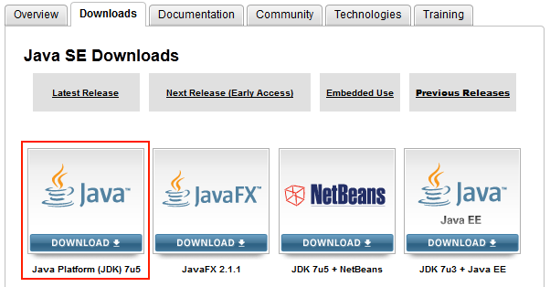

Sollten Sie bis jetzt noch kein Java installiert haben, laden Sie Java von der Webseite http://www.oracle.com/technetwork/java/javase/downloads/index.html herunter. Sie müssen sich gegebenenfalls registrieren bevor Sie mit dem Download fortsetzen können.
Laden Sie die letzte Version von Java SE durch anklicken herunter
Folgen Sie bitte den Anweisungen auf der Webseite.